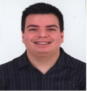

Datos Personales
Lytton Carrera Rodriguez
lyttoncarrera12@hotmail.com
0990275638
Babahoyo
LYTTON CARRERA RODRIGUEZ
Perfil
Estudiante de la Universidad Tecnica de Babahoyo,
Tengo gran interes en la programación siempre es algo que me llamó
desde muy pequeño la atención y llevo practicandola fuertemente
en los momentos que puedo y debo.
Experiencia
Estudiante de Ingenieria Civil Agosto 2020-Actualidad
- Estudios dedicados hacia la construccion y medidas topograficas
- Aprendizaje a base de datos continuos y experimentación avanzada
- Las mayores fortalezas aprendidas son por rigidez en voluntad y constante prueba y error
Idiomas
- ESPAÑOL
- INGLES
Competencias
- PACIENCIA
- PERSERVERANCIA
Estudiante de Ingenieria en Sistemas Marzo 2020-Actualidad
Universidad tecnica de babahoyo, Babahoyo
- Estudios dedicados hacia la programación en diferente forma aplicado a objetos
- Experimentación avanzada en diferentes ramas de la electricidad
- Datos principalmente experimentados viendo a cada una de las ramas estudiadas
Graduado de Bachiller en Ciencias Marzo 2005-Febrero 2018
Universidad de Guayaquil, Guayaquil
- Estudios legitimo con conocimientos Bachillerato unificado
- Titulo de Bachiller, experimentación en quimica, física y biología
- Practicas químicas además de bases fuertes
FORMACIÓN
Unidad educativa Padre Marcos Benetazzo, Babahoyo- Ayuda en formación académica y excelencia hasta 7mo grado
- Titulo de Bachiller, experimentación en quimica, física y biología
- Practicas químicas además de bases fuertes